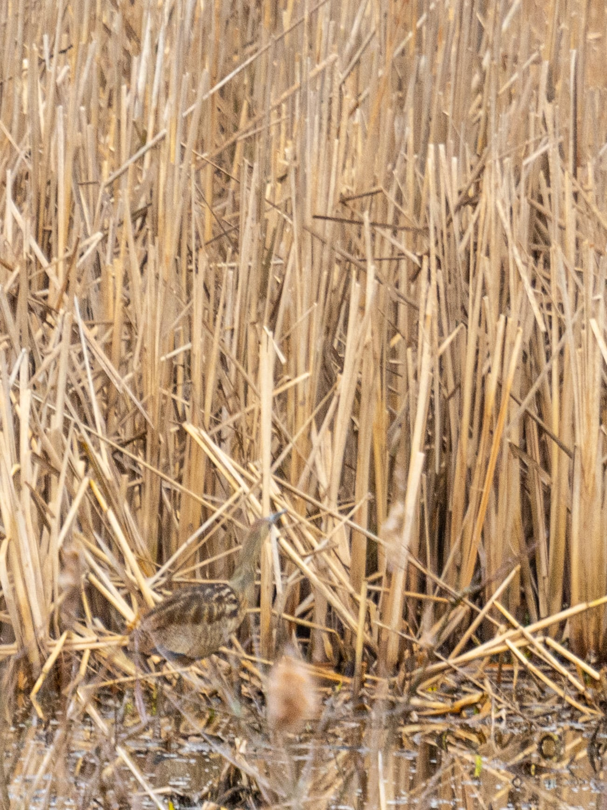
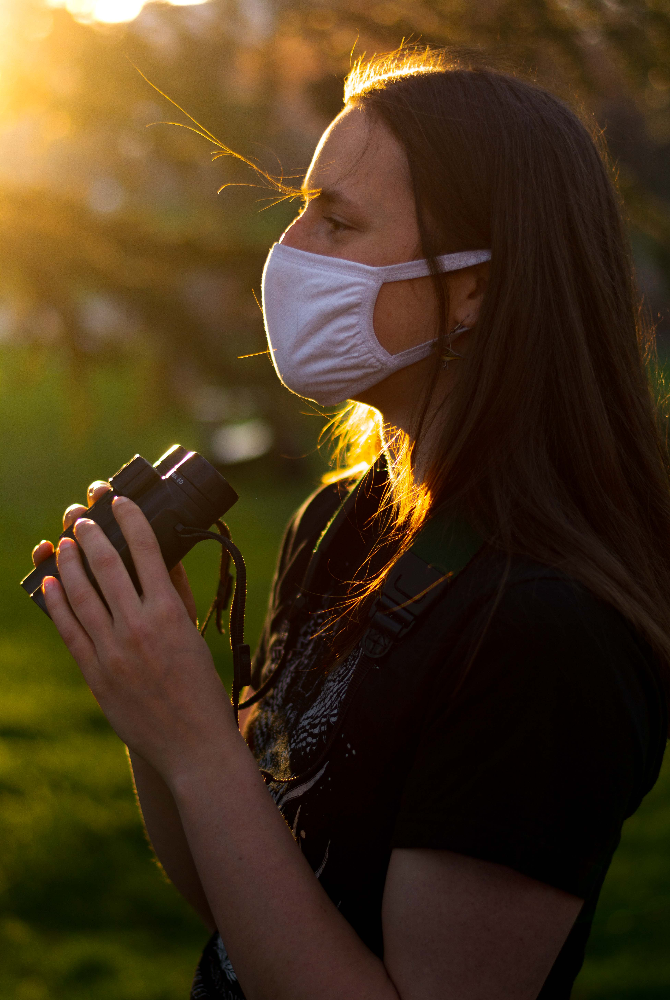
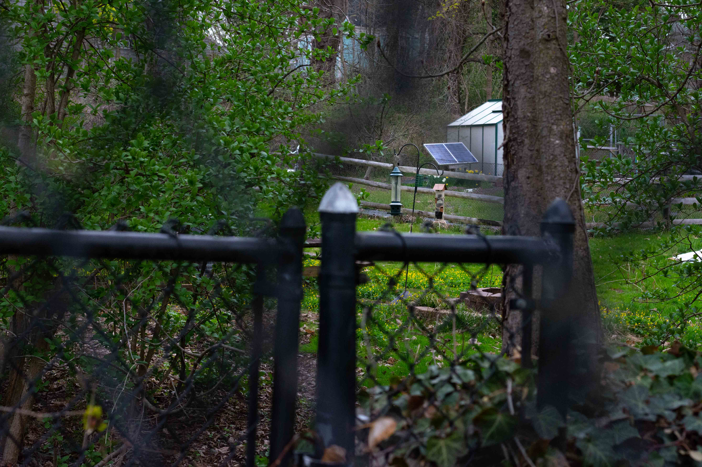
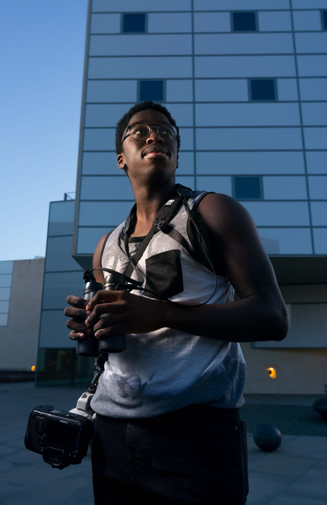
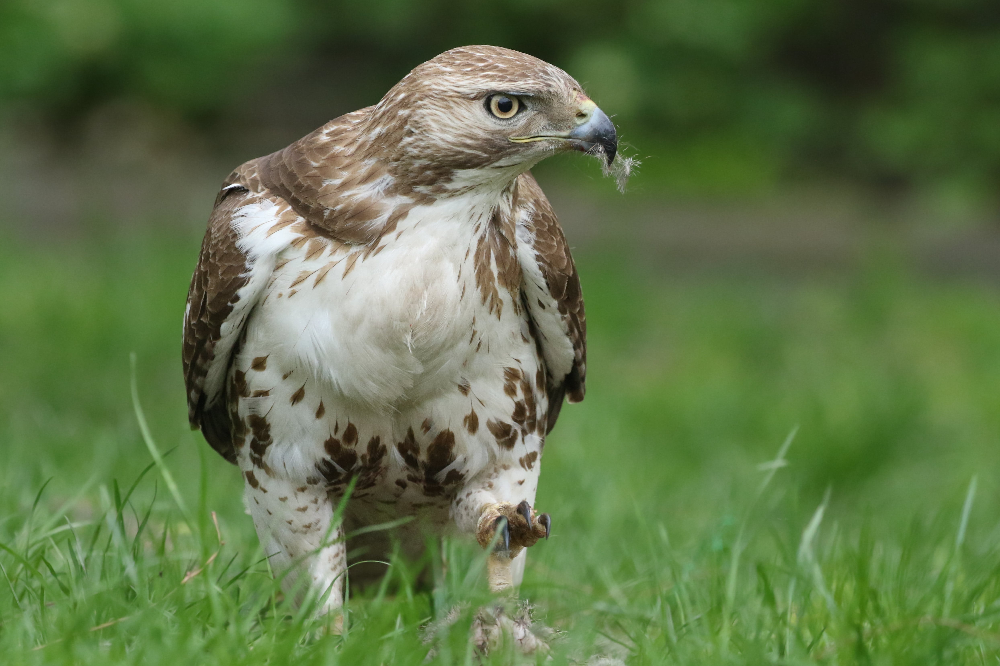
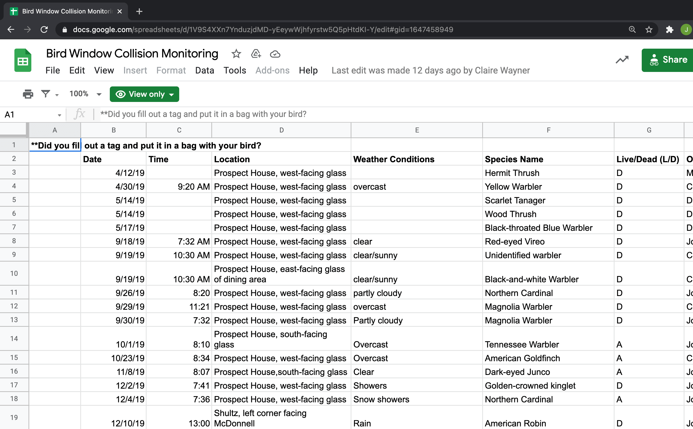
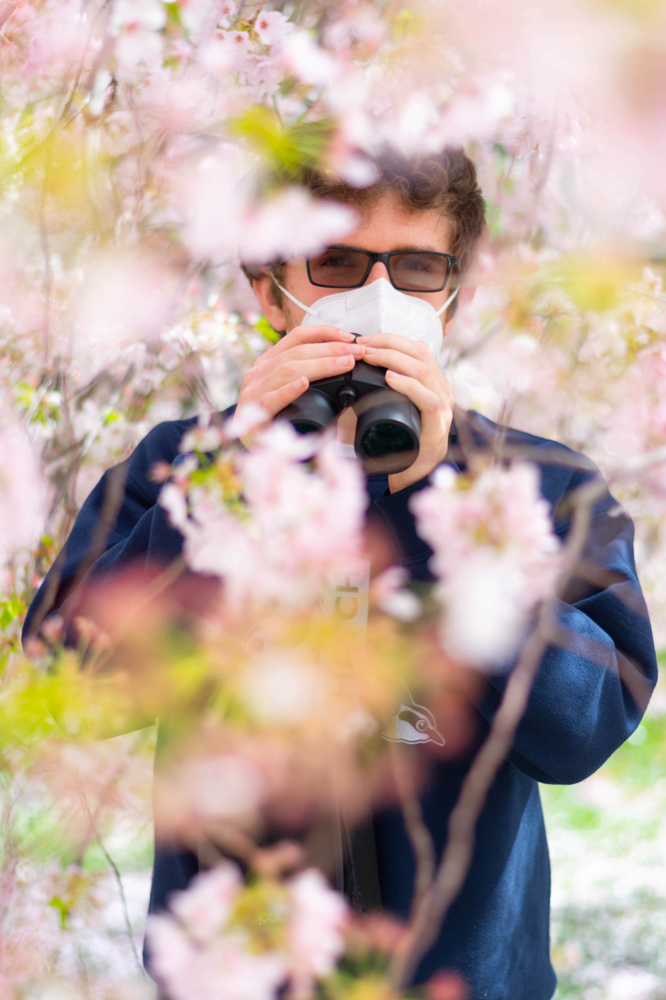

FEATURES
Despite a pandemic, Princeton Birding Society spreads its wings
By Rachel Sturley | Photographs by Julian Gottfried | Web design by Anika Maskara and Brian Tieu

An American bittern, a rare marsh bird related to the heron, seen at Charles Rogers.
It’s 6:54 a.m. on a Friday. The wind blows southward, the birds are chirping, and 1.4 miles from campus, three
figures stand on a wooded path, eyes trained on a small brown creature skulking along the edges of a marsh.
They are virtually unidentifiable as a junior and two first-years from Princeton University, donning masks, big
black binoculars, and hiking attire. The identity of the heron they carefully observe might elude less trained eyes,
but to these three students, it is clearly — and surprisingly — an American bittern. Rare for these parts of the
Charles Rogers Wildlife Refuge, this sight makes the early wake-up well worth it.
After the well-camouflaged bittern leaves their field of vision, the birders confer excitedly before falling silent
again and turning back to the wooded path. Every once in a while, the natural ambience is broken by “pishing,” where
one birder alternates “p” and “sh” sounds to imitate an alarm call and coax birds out into the open; other times a
member of the group calls out a species name, and the rest of the group stands on high alert, scanning the
skies.
These three friends all happen to be members of the Princeton Birding Society (PBS), a group of students dedicated to ornithological education,
conservation efforts, and the practice of birding. As spring migration picks up and the local bird population
swells, they have gotten into the habit of meeting for small, informal bird walks in nearby nature reserves.
“On a bird walk, I am always focused,” said Claire Wayner ’22, co-founder of PBS. “I'm listening a little bit
harder. I'm looking around for movement in the sky, and in trees and bushes.”
“It’s kind of like hide-and-seek,” she continued, “but with amazing, colorful feathered things that move.”
In the popular imagination, noted Wayner, birding evokes an image of an elderly couple in “nerdy clothing”: cargo
vests, bucket hats, clown-size hiking boots. But Wayner and other young birders at Princeton are eager to revitalize
the art of birding — not just as a hobby but also in the hopes of cultivating a love of the natural world that will
motivate people to save it. In the face of a rapid decline in bird populations, even something as small as a walk reminds these members of all
that the world stands to lose.
“On a bird walk, all you hear are other people's footsteps and the chorus of birds singing in the trees,” said
Willow Dalehite ’22, an ecology and evolutionary biology (EEB) concentrator and the current president of PBS. “And
it's just a really wonderful sound. Sometimes I go outside and then I realize that, in the background, I'm hearing
so many birds. And I imagine what it would be like if they weren't there, and it's just completely different.”

Claire Wayner ’22, cofounder of Birding Society.
Sam Vasen ’23, treasurer of Birding Society, scans the sky for raptors along with Jimmy Waltman ’23 and Aaron Eng ’23.
Birders build their niche
Wayner and Joe Kawalec ’21 both came to Princeton with a long-standing interest in conservation and birds. Wayner,
who started birding at age 11, was a member of a community of young birders back home in Maryland and was eager to
find similar connections at Princeton. During her first semester on campus, she perceived a disappointing lack of
birders on campus. However, that spring, she received an exciting email through residential college listservs from
Kawalec.
“He was looking at starting a bird feeder project. And I was shocked,” Wayner recalled. “So I emailed him really
frantically and was like, ‘Oh, my gosh, we need to have a meal. We need to talk about birds.’ And we got lunch.”
Kawalec, an EEB concentrator, hadn’t started birding until the summer before his second year at Princeton. Eager to
combine his academic interests with personal hobbies, he spent that summer exploring the natural spaces around his
home in East Brunswick, N.J.
The email Wayner saw was a call for volunteers for Project
FeederWatch, a citizen science project run by the Cornell University Lab of Ornithology. Tracking what birds
come to feeders nationwide in the winter provides ecologists with crucial data for analyzing patterns in migration
and survival. In his sophomore year, Kawalec started a branch of the project housed in the Princeton Garden Project
with the help of a grant from the High Meadows
Environmental Institute.

Bird feeders at the Princeton Garden Project at Forbes, made inactive by the pandemic, as access to the site has been heavily limited.
Wayner’s and Kawalec’s shared interest in birding and conservation propelled them to start PBS. Wayner described how
they gathered petition signatures and “went through all the hoops” of making the group official through the Office
of the Dean of Undergraduate Students (ODUS) that spring, before organizing their first birding outing in May 2019.
Both remember feeling anything but optimistic about that walk. It was a Saturday morning at 7 a.m. and, to top it
off, fell right in the middle of finals period. But 18 students came, and the Princeton Birding Society was born.
Both Wayner and Kawalec have a photo from the walk framed by their desks and describe the walk as one of their
favorite PBS memories.
“It’s been so exciting to watch this very enthusiastic, dedicated group of undergraduate birders form,” said Cassie
Stoddard, assistant EEB professor and faculty advisor to PBS. “I've just been in awe of what they've been able to
accomplish and the kind of excitement that's bubbled up on campus.”
The group quickly expanded their nature walks beyond the local area. They petitioned ODUS to grant student groups
access to Enterprise vehicles, which allowed PBS to arrange trips off campus to birding sites such as Cape May,
N.J.; Hawk Mountain, Pa; and Barnegat Light, N.J.
A male eastern bluebird, seen at Charles Rogers.
PBS adapts to campus restrictions
Like all other aspects of campus life, PBS had to make major adjustments to continue running this year. Under the
Social Contract, many events sponsored by student groups are not permitted, so the usual organized birding outings
are off limits; instead, small groups of friends arrange morning walks in the local nature areas.
Restrictions have surprisingly allowed the club community to flourish, according to current and past officers. The
once inactive GroupMe is now filled with pictures of birds that members see around campus and at home. This
semester, the club has been collectively tracking the movements of a red-tailed hawk they fondly dubbed the “campus
hawk.” Less experienced birders also use the GroupMe to ask for advice from the group on identifying songs and
species.

Kojo Baidoo ’24, social media chair.

Photo by Kojo Baidoo ’24 showing the campus red-tailed hawk dining on a squirrel in the Whitman courtyard.
Education has remained central to PBS’s mission since the shift to virtual learning. Dalehite instituted biweekly,
club-wide meetings this spring, which are usually educational workshops led by the more experienced birders in the
group.
Their educational efforts regularly translate into environmental activism. PBS advocates for bird life on campus by
spreading awareness to the campus community and the University administration. Wayner runs the Bird Window Collision
Monitoring Project, which she started a little over two years ago to keep track of dead or injured birds from window
strikes.
“Up to a billion birds every year die from colliding with windows in the US alone; it's the second highest cause of
death of migratory birds in the US,” Wayner said. “It's really tragic, honestly, and there are a couple places on
campus where we regularly witness window strikes.”
One such place, she noted, is a glass room in Prospect House that juts out into the garden. After speaking with the
University architect and submitting the collected data to University Facilities, Wayner explained that a bird safe
window treatment will be applied to the room this summer.
As an extension of these efforts, the group wrote a proclamation that establishes the week of April 19-25, 2021 as
Bird Friendly Campus Week, in conjunction with celebrations of Earth Day. The document, according to Dalehite,
“reaffirms student interest in Princeton’s existing and future commitment to creating a bird friendly environment on
campus.”
KyuJung Whang, vice president for Facilities at the University, signed the document on April 20.
Max Gotts ’24, looking for window strikes outside Prospect House. Birding Society is currently working with the University to install bird-safe window film.

A spreadsheet of birds found by Prospect House and nearby.
How a “hobby” becomes environmental activism
Beyond the concrete efforts of PBS to raise awareness and promote conservation, Wayner reiterated that birding
itself is a practice that benefits sustainability and environmental activism.
“We've lost 40 percent of all bird individuals, I believe, in the last couple of decades in the US. We're really in
a bird conservation crisis right now,” Wayner said. “The more people that we can get out into nature, watching birds
and appreciating them, and developing a love of them, the more likely it is that we'll be able to save them.”
Stoddard, whose research on bird sensory ecology fuels conservation efforts, agreed.
“If we go birding and we learn about these species — there's 10,000 species of birds and counting, each with its own
story — the more likely it is that we will design and advocate for conservation practices,” she said.
American robins along Goheen Walk. In March, you can find the birds congregating on grassy spaces all across campus.
Birding itself is far from a passive exercise. All of the birders interviewed sung the praises of eBird, a phone
application that allows birders to record their data for use in ornithological research on biodiversity. Kawalec
described the app as “social media for birding”: it allows birders to connect with others in their area and to track
migratory patterns on a micro level.
“When you log these observations and records, it's satisfying for your own perspective, but it's also contributing
something extremely valuable to science,” said Stoddard. “I’ve actually found that the advances in technology,
especially these apps, are really opening up birding to broader audiences.”
Kawalec agreed — he hopes that more people take advantage of these apps and their natural surroundings to observe
their feathered friends.
“Birding can be such a natural part of anybody's lifestyle, you don't have to call yourself a ‘birder.’ It's not
very complex,” Kawalec said. “It sounds kind of exclusive sometimes, but it's really supposed to be a very inclusive
hobby.”

Joe Kawalec ’21, cofounder of Birding Society.
The campus fox, after a successful hunt behind the Lewis Center for the Arts. With all the wildlife on campus, Birding Society often inadvertently becomes Mammaling Society.
Today, PBS has over 200 people on their listserv and hopes to continue growing, especially when they can start
organizing trips off campus again. For these students, expanding the birding community at Princeton is a first step
to a greener future.
“I truly think that the way that we are going to combat the climate crisis is first by appreciating what's around us
— appreciating the natural world and learning how to live sustainably along with it,” said Wayner.
Charles Rogers Wildlife Refuge is the area’s prime birding location. Connected to the Institute Woods, it offers trees, fields, and marshes, and over 200 bird species.